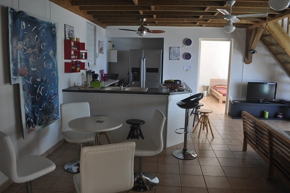

Morne TARARE - 97125 BOUILLANTE
Tél./Fax : 05 90 98 72 05 - Mobile : 06 90 40 63 48 BUNGALOW GITE GUADELOUPE
|
|
|
|
Le Nid Tropical - gite bungalow bouillante guadeloupeSylvie et Jean Pierre vous accueillent dans leur gîte pour un hébergement dans leur bungalow en Guadeloupe à Bouillante ainsi que dans leur location d'un appartement de standing. Vous passerez un sejour en Guadeloupe dans un gîte avec des bungalow s créoles et vous garderez un souvenir de vacances inoubliables à Bouillante Guadeloupe dans nos bungalows nichés au creux d'un cadre paradisiaque, verdoyant, fleuri avec une des plus belles vues de Guadeloupe sur les îlets Pigeon et la baie de Malendure, un bonheur d'être sur votre terrasse à admirer ce pamorama, dans un quartier calme et résidentiel à des tarifs plus que compétitifs vu son emplacement , sa vue, ses prestations, difficile de trouver moins cher. Le Plus du Nid Tropical, gite bungalow guadeloupe est sa vue panoramique incomparable en Guadeloupe, nos gites et bungalows sont au centre de toutes les liaisons Nord au Sud de l'île et sa proximité; de tous les commerces. Le Nid Tropical, un gite bungalow en Guadeloupe à Bouillante, vous propose 6 bungalows ventilés, 4 bungalows climatisés, un appartement de standing. Pendant votre séjour en Guadeloupe à Bouillante dans votre bungalow, le gite Nid tropical vous fait profiter de forfaits plongée à des tarifs préférentiels, aux îlets Pigeon, dans la fameuse réserve de Cousteau. Le Nid Tropical gite bungalow Guadeloupe est situé à 800 mètres de leurs partenaires, clubs sympas et sérieux sur la plage de Malendure en Guadeloupe. Retrouvez votre gite bungalow Guadeloupe pour partir à l'aventure des randonnées, du canyoning, des visites touristiques, des plages paradisiaques et des paysages exotiques à admirer pendant vos vacances choisissez un séjour en gite bungalow Guadeloupe !
Découvrez nos offres de location dans un gite Guadeloupe, en bungalow créole bois à brasseur d'air avec clim mobile et en bungalow climatisé dans un gîte bungalow hebergement avec piscine à Bouillante Guadeloupe, niché dans un parc exotique avec une vue à vous couper le souffle
au dessus de la baie de Malendure, face aux îlets Pigeon de Guadeloupe. Sylvie et Jean Pierre, dans une ambiance conviviale et familiale, vous proposent dans leur gite bungalow Guadeloupe à Bouillante :
- 6 gites bungalow de 3 personnes - 4 gites Bungalow climatisé Guadeloupe, de 4 personnes
- 1 Appartement climatisé de standing gite Guadeloupe de 4, 6 ou 9 personnes avec brasseurs d'air, composé de 2 chambres + 2 salles d'eau WC et d'une grande cuisine américaine tout confort sur terrasse. Nouveauté hébergement bungalow Guadeloupe! Possibilité d'une 3ème chambre en plus, voir conditions. Pour votre sécurité, un coffre-fort dans chaque bungalow du gîte et deux coffre-fort dans l'appartement ! Tous nos gites bungalows, appartement, carbet et piscine, bénéficient de cette vue mer exceptionnelle ! Dans notre hébergement bungalow guadeloupe vous avez la WIFI gratuite. Si vous n'avez pas emmené votre ordinateur portable, nous vous proposons un accès à l'un de nos ordinateurs de bureau, selon notre disponibilité. Notre gite bungalow Guadeloupe, le Nid Tropical, a tous ses bungalows au coeur d'un parc exotique fleuri, agrémenté d'une Piscine homologuée, contrôlée par la DSDS tous les mois de 10,50m x 5,50 m, de deux barbecues en pierres, d'un carbet de 150m2 pour votre détente et vos loisirs avec coin laverie devant votre location gite bungalows hébergement Guadeloupe à Bouillante. Location gite hébergement bungalow Guadeloupe au Nid Tropical, un coup de coeur ! NOUVEAUTE ! Pour vous satisfaire en partenariat avec Delphine & Philippe, ceux-ci vous proposent une petite villa de trois chambres à Bouillante avec vue mer imprenable dans un quartier résidentiel à quelques minutes à pieds de la plage de Malendure. Cliquez sur la photo pour plus d'infos  ANCV : Chèques vacances acceptés au gîte bungalow Bouillante Guadeloupe Nid tropical Location Gite bungalow Bouillante Guadeloupe recommandé par le guide vert Michelin 
Vue du carbet effleurez la photo et vous avez vue de la piscine sur les îlets Pigeon Le carbet du nid tropical gite bungalow guadeloupe où nous pouvons accueillir des groupes, pour cela soyez prévoyants pour votre réservation
Visitez notre gite bungalow, le Nid Tropical en suivant Jean Pierre dans ce petit Film, où vous pourrez découvrir nos bungalows, la piscine, le carbet, la propriété et surtout sa vue imprenable!!! Ce film a deux ans, nos bungalows ont été relookés en juin 2012 et ils ont pris des couleurs caraïbes, et Jean Pierre des cheveux blancs. Chut!... La balade est si sympa ! Le point fort du Nid Tropical, son emplacement, sa vue et ses tarifs.
location Gite bungalow Bouillante Guadeloupe recommandé par le Location Gite Bungalow recommandé par Destination Guadeloupe
|
|
SCI Gîte bungalow LE NID TROPICAL - Hebergement gite Bungalow Guadeloupe -
Location de Bungalow et Gite Sejour Guadeloupe. |
|